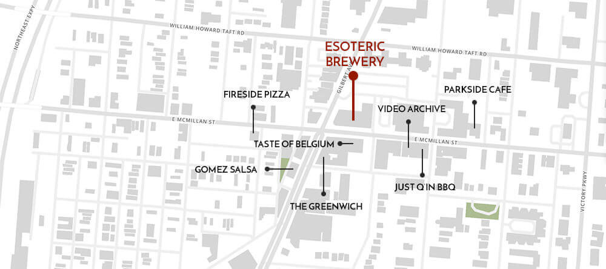
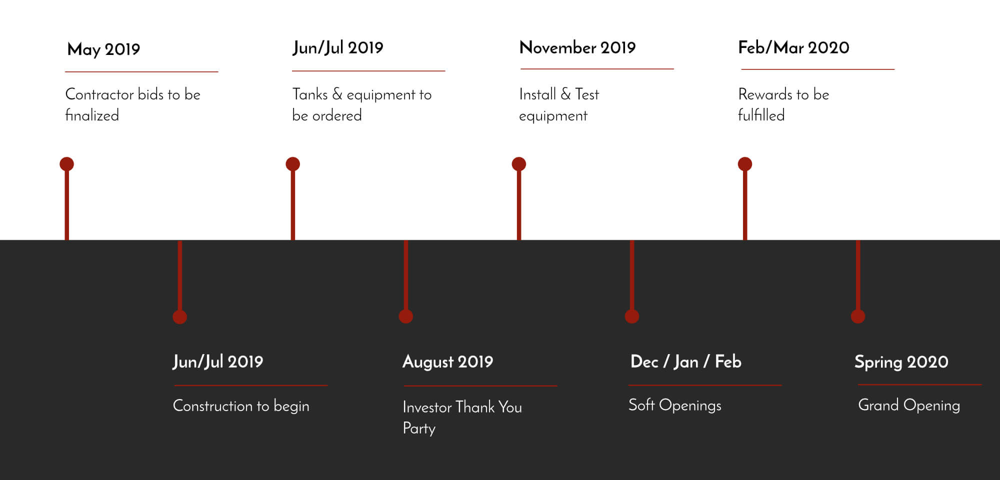
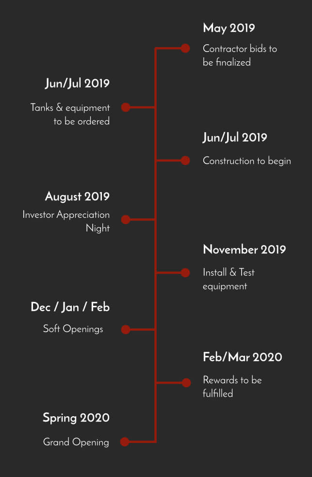
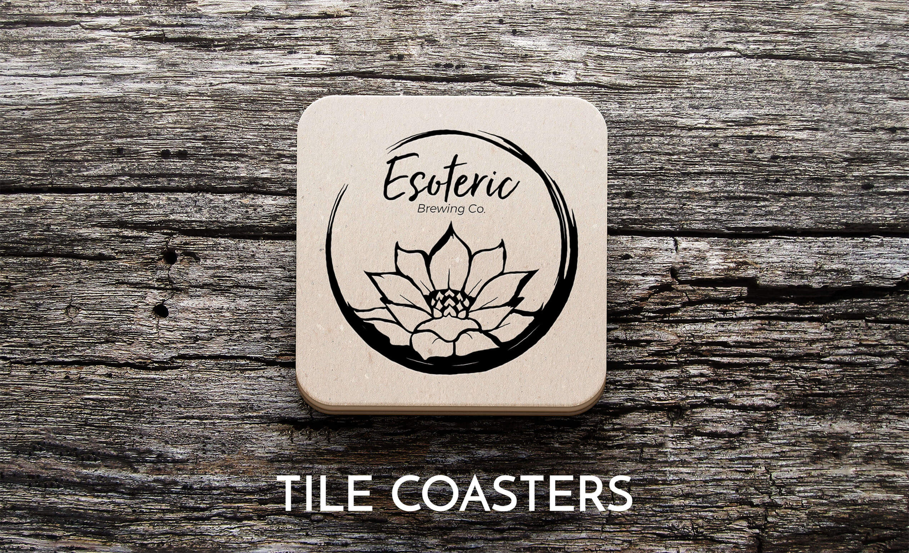
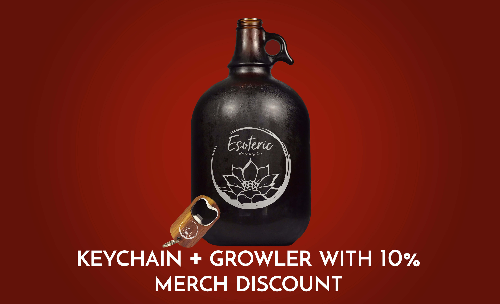
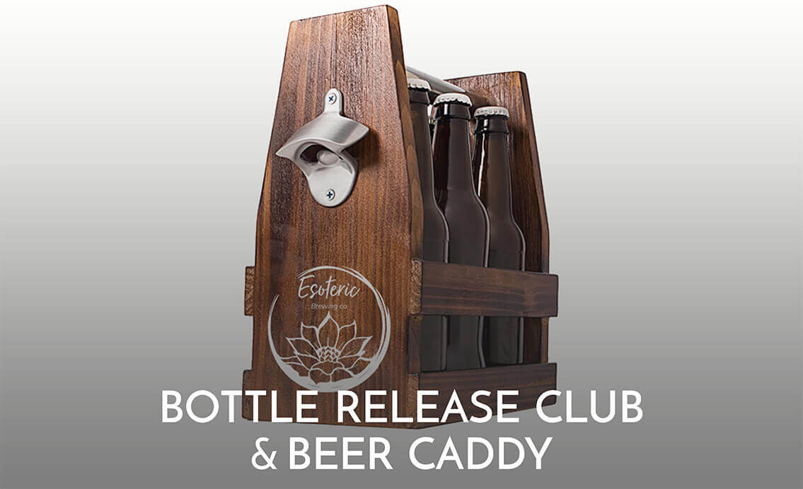
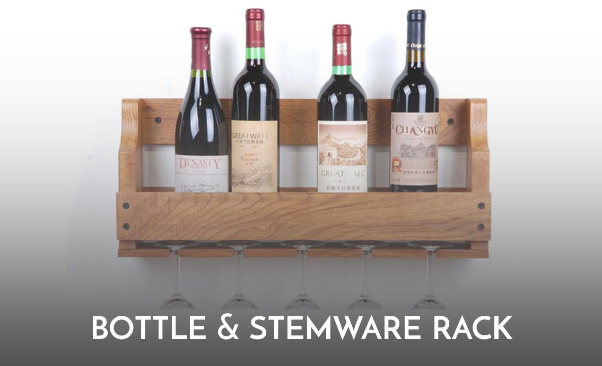
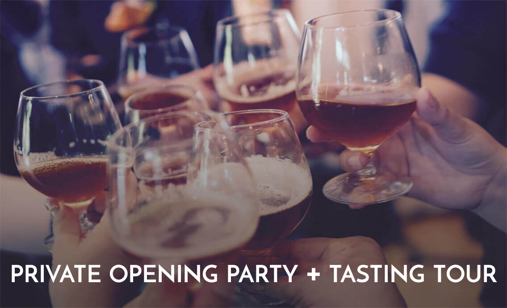
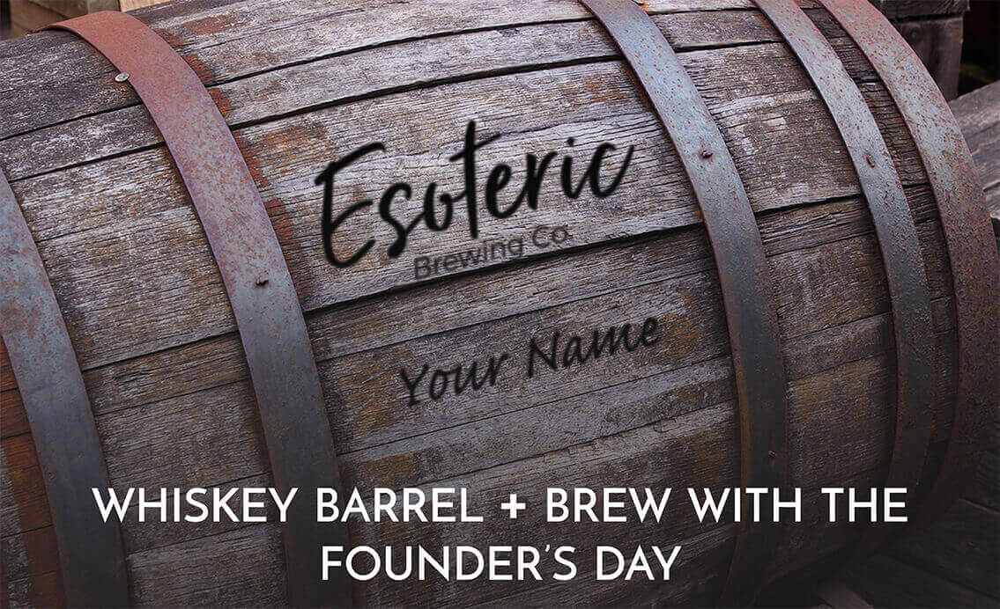
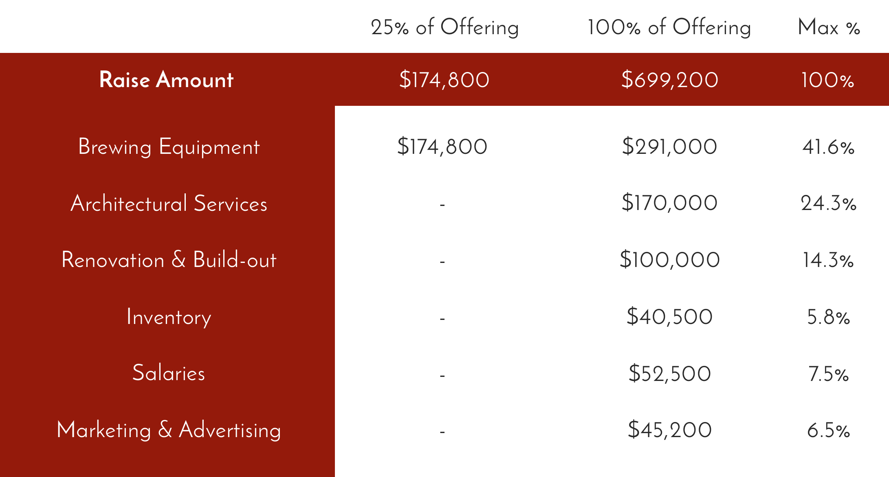

Vision & Mission
Our vision is to create a beer with such integrity that it has a profound social impact.
The lotus flower is our symbol, a metaphor that represents the beauty that fights through adversity to rise out the ashes. Esoteric found this 100 year old building, abandoned, and left for decay. Together with your help, we want to revive this place by building a new production brewery that creates jobs for our neighbors and instills pride in this wonderful community once again!
Overview
Legal Name
Esoteric Brewing Company, LLC
Address
900 E McMillan Street
Cincinnati, OH 45206
Raise Amount
Up to $894,200
Esoteric is Craft Beer with Integrity
Over the past few years, a wave of craft breweries has swept across America bringing innovation, new styles, and bold new flavors. But the traditional styles of craft beer are getting lost in the mix. In many ways, we’re losing the integrity of craft beer... the very soul that started this craft beer movement altogether.
That's why Esoteric elevates craft beer so it’s as elegant as fine wine. Our master brewer spent years honing his craft, paying homage to traditional Belgian, English, German, & American style beers made with old world character.
Esoteric beers are brewed with pure ingredients, sourced locally, and grown organically. We’re a craft brewery that will elevate your palate and create a sumptuous experience that changes the way you think about beer.
When you experience Esoteric you experience enlightenment.
Create an Enlightened Taproom Experience
Esoteric will redefine the standard taproom by creating a 5 star experience. We’re renovating the Paramount Building, the most recognizable building in Walnut Hills. Inside this exquisite 1920’s art deco style building, an intimate taproom awaits hearkening back to the days of the prohibition speakeasy. The brewery will occupy 10,000 sf, and will host as many as 400 guests. But unlike the standard warehouse taprooms of today, we’ll have a warm & inviting place built just for you.

There’s a Bigger Vision for Walnut Hills
Walnut Hills is a mile from downtown Cincy in a densely populated area. It represents the best of our city with a diverse population in age, race, & socio-economics. Long-time residents have seen the ups & downs and have a deep sense of pride in its renaissance. Twenty-somethings like the accessibility to downtown, affordable housing, and evening nightlife. Boomers enjoy the high-rise luxe apartments that overlook the Ohio River.
The Walnut Hills Redevelopment Foundation (WHRF) is investing $20M into the block, to revitalize Paramount Square. There are ~1,000 units planned in the next 3 years within a ¼ mile from the new brewery. The neighborhood is also between 2 major universities and has direct access to a major interstate.
Many new businesses have already moved in ahead of the development. Esoteric Brewing Co. is proud to join the Walnut Hills community including local favorites such as: The Greenwich, Taste of Belgium, Gomez Salsa, Just Q’n BBQ, Video Archive, Fireside Pizza, and Parkside Cafe.

Esoteric Wants Equity for All
Breweries are playing a role in the revitalization of communities. They are a magnet for visitors, they become anchors for retail, create new jobs, and instill pride. But the sudden influx of new residents can shift the demographics of the neighborhood. In an industry that traditionally lacks diversity, Esoteric brings you the first African-American and Asian-American owned brewery in Greater Cincinnati.
We are so committed to maintaining the integrity of our neighborhood. That's why we're offering the community a unique opportunity to own a piece of Esoteric Brewing Company. You're the fabric that's made this neighborhood so special. You already invested your lives here, and now we invite you to invest in Esoteric so we can grow together. As part of our commitment, Esoteric plans to designate a portion of our proceeds to non-profits in the local community that promote education, economic equity, improve food access, provide skills training, and other important causes that make our neighborhood better.
Timeline
 The Craft Beer Market: Growing 6% a Year With Plenty of Room for More
The craft beer segment now represents 13% of the overall beer industry taking share away from the likes of AB InBev each year, and it’s still growing 5% a year. According to the the Brewers Association, the craft beer industry has grown to 6,000 breweries in 2017. Ninety eight percent of them will be small independently run establishments. Ohio craft beer sales topped $2.7B and employed over 15K people (per the Ohio Craft Brewer’s Association) making it the 7th largest for craft beer.
The Local Cincinnati Brewery Market
The Cincinnati market alone has 35 breweries on line. We believe there’s plenty of room for more, especially in neighborhoods that can maintain an installed base of loyal customers. In fact, the taste for craft beer has gone local as patrons prefer to drink hometown beers, especially ones that come from their neighborhoods.
This hyperlocal focus works in our favor, as we stand to become the go-to neighborhood brewery in this fast growing residential market that’s expanding in Walnut Hills. Conservatively, we’ve based our projections on sustaining a minimum of 300 guests per day.
Production Capacity
Esoteric’s brewhouse will contain a three vessel 10-barrel craft brewing system capable of producing up to 5,000 barrels the first 3 years. There’s room for expansion in the building to maximize capacity at 12,000 barrels, generating going revenues of $5.5M at full-scale. To get there, the plan is to launch the neighborhood taproom to sustain a healthy base business. Then in years 2-3, we’ll begin self-distributing to grow our brand, and reinvesting our profits to expand capacity to full-scale by years 4 & 5.
The Team
Founders and Directors
Brian Jackson
CEO and Co-Founder
Brian graduated with a Bachelor’s Degree in Psychology from the University of Cincinnati. Brian began his career as a General Manager at Chipotle, where he learned the importance of making quality products with superb service. He carried over this approach to home brewing when he started in his basement 8 years ago. Since then, he’s garnered awards for his beers, and became a certified Beer Judge. Brian then spent 7 years working for Cavalier Distributing, an alcohol distribution company building relationships with restaurants & retailers. Two years ago, he then moved on to MadTree Brewing Company where he currently serves as a commercial brewer.
Marvin Abrinica
Chief Marketing Officer and Co-Founder
Marvin spent 18 years at Procter & Gamble building brands, sourcing deals, and training leaders. In 2015, Marvin began Thrivera a digital marketing agency that helps companies brand and fund their ideas. He then started Wunderfund as the region’s first FINRA regulated crowdfunding portal. Marvin is a public speaker, a two time TEDx speaker, and now gives talks at Fortune 500s, conferences, accelerators, and universities. Marvin’s also a leading advocate for the growing startup ecosystem in Ohio, and is a mentor and advisor for several startup companies.
Perks All perks are additive. See the agreements below below for further details.
invest
$100 (First 250 people)
receive

invest
$250 (First 200 people)
receive
invest
$500 (First 150 people)
receive
invest
$1,000 (First 100 people)
receive
invest
$5,000 (First 50 people)
receive
invest
$10,000 (First 25 people)
receive
invest
$25,000 (First 4 people)
receive
Offering Details
| Issuer Name | Esoteric Brewing Company, LLC |
| Securities | Equity |
| Offering Amount | $894,200 |
| Valuation | $3,000,000 |
| Minimum Investment: | $100 |
| Ownership % of the Company | 30%. Investors will receive common equity interests in the Issuer. Anyone who invests greater than $25,000 can convert their common equity units to preferred equity (after a six month holding period). The preferred equity units feature an annual distribution to pay down the principal investment. Once paid off, preferred units continue to receive an annual pro-rata distribution from profits. |
Click here to view the Esoteric’s SEC Form 1-A filing.
Project Budget
Esoteric Brewery requires an estimated $2.1 to $2.45 million to fund the complete project build-out and get the brewery operational. We’ve already accounted for >70% of the funding needed.
| $850,000 | Tenant Allowance by landlord Model Group |
| $195,000 | Private capital already raised |
| $50,000 | Commitment from Cincinnati Development Foundation |
| $700,000 | SBA Loan |
| $1,766,000 | |
| $334,000 - $699,200 | Remaining Balance to Fund |
Use of Funds
The Company anticipates to get the brewery up and running even if this offering is partially subscribed
A letter from the Founders
Dear Investors,
Hi, I’m Brian Jackson. Eight years ago, I started home brewing in my basement, while I worked days distributing beer. Then, I was fortunate enough to get hired at a large microbrewery, where I learned the trade and have been brewing beer in full-scale tanks. Every experience led me down this path to bring you Esoteric Brewery.
Esoteric is not just any craft beer, it’s a beer created with sophistication, full of integrity, and with the power to make a profound social impact.
When searching for a location, we wanted a place that embodied our principles and shared these values. Then we came upon Walnut Hills, a community with vibrant diversity, a beautiful history, and the promise of greatness.
There’s no greater promise in this neighborhood than the Paramount building. It once was the premium shopping destination of the city, but the neighborhood hit hard times, and the building fell into disrepair. But today, Esoteric is pleased to raise it out of the ashes once & for all.
Marvin and I are just two ordinary guys with a plan. But as two minority brewers, we realize the plan is much bigger than us alone. Esoteric Brewing did not choose this neighborhood… this neighborhood chose Esoteric.
So today, I invite you to join us and become an owner and partner in this dream. We invite you to experience the enlightenment of Esoteric Brewing.
Sincerely yours!
It Takes a Village...
The building is 100 years old, and requires some major construction & rehabilitation. So, we’ve partnered with the Walnut Hills Redevelopment Foundation to fit into their master plan. The Model Group, a prominent builder of several communities across Cincinnati, is leading the construction & build-out, while New Republic Architects has spearheaded our drawings and interior design efforts. The Thrivera Brand Group is our marketing agency.
Testimonials from Investors
I listed everything that I would want and what I thought would resonate and be successful in a new Cincinnati brewery. From flagship styles of beer (Belgian), to the sounds (not too loud), from the seating (softer chairs and lounge space) to the location (anchor spot in a neighborhood...) As they presented their vision, I was able to mentally check-off about every single one of the characteristics on my list.
I love the old deco-style Paramount building. I love the location in the neighborhood where this start-up can become an anchor for a rejuvenated community. A gathering space where all folks can come and have great conversation, in a comfortable place, over a fantastic craft beer.
- TJ Statt
I invested in Esoteric because Brian and Marvin are the perfect combination: beer-smart and business-savvy. Walnut Hills is an excellent location for their unique brewery and I'm happy to be a small part of the continuing redevelopment of that community.
- Mike Willians
Documents
Risks and Offering Circular
Please read through the full document which includes the offering memorandum, risks & disclosures, existing contracts, leases, and financial statements.
FAQs
Will you be serving food in the brewery?
Yes, we’re planning for the adjacent space next to the brewery to have a kitchen and food counter for our guests to order food and dine directly from the inside the brewery.
What happens if you don't reach your full fundraising goal? Will the project stop?
The project will proceed whether we reach our full crowdfunding goal or not. The pre-approved SBA loan will allow us to make up for any short-fall. Additionally, we have a pre-committed investor who is willing to put up to $400,000 in equity at the tail-end of the campaign. As a contingency plan, we can scale back some of our equipment, furnishings & fixtures as needed.
What makes Brian and Marvin such a great working team?
When it comes to running a brewery, we both have different strengths that complement one another. I’m an operational brewer with retail experience, and distribution connections. Meanwhile, Marvin’s understands the numbers, the business, and what it means to build a brand. Together, we make a phenomenal team.
With so many breweries already out there, what makes Esoteric so special?
Esoteric is a brand built on sophistication. When you step into our tap room, you’ll experience a location that transcends the typical warehouse you’re accustomed to going to. Expect, a warm & inviting atmosphere that feels upscale, but is accessible for all. Oh, and we promise the beer will taste just as sophisticated!
What do you predict will happen with the beer industry?
The craft beer industry reached 6,000 taprooms in 2017, and the Craft Beer Association reported a 6% growth rate. Importantly, the craft beer segment is the only segment of the overall beer market that is growing, and still only accounts for 13% of the overall beer market. So, there’s plenty of upside. There may be some natural selection that occurs, and the ones that thrive will have strongly established brands rooted in a profitable taproom sustained by the neighborhoods they reside in.
What do people say about your beers?
People love our beers. I’ve been a homebrewer and part of the local brewery scene for eight years. As a homebrewer, I’ve been sharing my beer at parties and home gatherings and people always ask for my Belgian Quad. I call it Nirvana, because that’s the state of mind that you’re in after you have one. In fact, some people don’t even remember my name, and call me the Nirvana guy.
Needless to say, I’ve won several awards for my beer, and I’m a certified beer judge. I work for a major microbrewery now, and two of my own recipes have been featured there in the last year alone. It’s safe to say that people believe in Esoteric’s liquid.
What’s the plan for distribution as you grow the brand?
We expect to establish a profitable taproom in Year 1, which will self-fund our distribution & expansion. By year 2-3, we want to self-distribute kegs to local retail establishments within the region. As a former distributor, I have good relationships within the restaurants & bar industry. It’s imperative we begin seeding our presence around the region at high volume retail in order to generate demand. This gives us the right to bottle & distribute to bigger retail accounts by Years 3-5.
What’s the price range of your beers?
Our beers will range in price from $5 to $7 depending on the style of the beer. This is pretty standard within the industry. Some of our beer styles such as our specialty Belgian beers, as an example, have a higher alcohol content by volume (abv), which means we’ll serve smaller pours. This also gives us higher profitability by ounce.
What will the high-end range of the fundraising allow you to do?
If we’re fortunate to reach $900K, it allows us to add bottling equipment and distribution capability sooner. That allows us to start building our brand in retailers and accounts so we can grow our top-line revenues. Since this is equity, it also gives more ownership to our shareholders, and importantly, it also allows us to carry less debt to service.